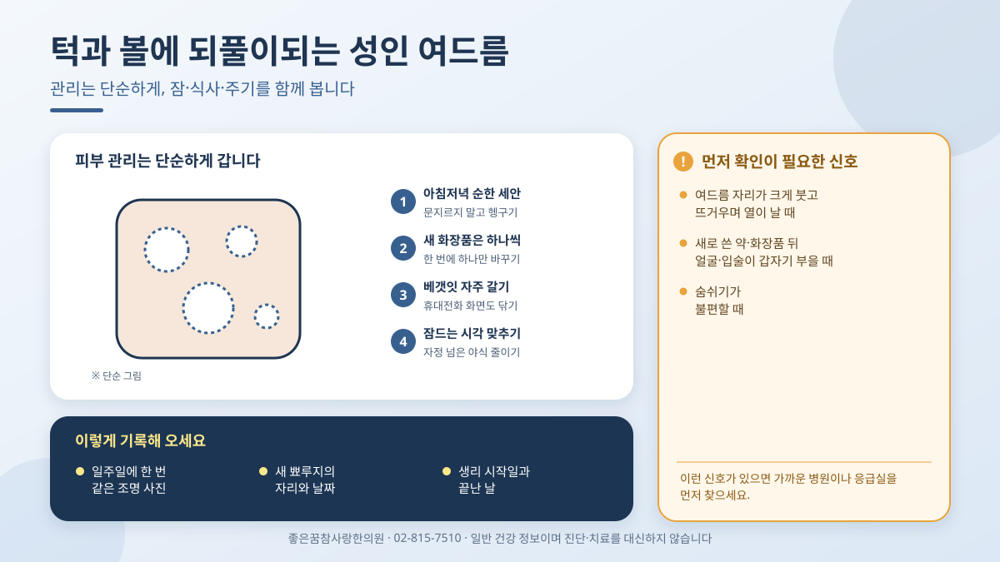

이종호 한의사 감수좋은꿈참사랑한의원 대표원장 (한의사 면허번호 19769)발행 2026-11-26 · 수정 2026-11-26
이 글의 차례
아침에 세수를 하다 턱 아래를 만지면 단단하고 욱신거리는 뾰루지가 또 하나 잡힙니다. 겉으로는 작아 보이는데 누르면 아프고, 며칠이 지나도 좀처럼 가라앉지 않습니다. 중요한 약속을 앞둔 주에 꼭 올라오는 것 같아 거울 보기가 싫어지는 날도 있으시지요.
성인 여드름은 사춘기가 한참 지난 20대 후반 이후에도 여드름이 계속되거나, 어른이 되어 새로 생기는 경우를 말합니다. 이마와 코보다 턱선, 입 주변, 볼 아래쪽에 깊고 붉은 뾰루지가 되풀이되는 모양이 흔합니다.
진료실에서 이런 말씀을 자주 듣습니다. "학생 때도 안 나던 여드름이 왜 이제 나요?" "화장으로 가리기도 지쳤어요." 겉으로 드러나는 자리라 마음고생이 생각보다 크다는 것을 잘 압니다.
먼저 분명히 말씀드릴 것이 있습니다. 피부과에서 처방받은 바르는 약과 먹는 약은 처방대로 이어 가셔야 합니다. 한의원 진료는 그 치료를 대신하지 않고, 곁에서 잠과 식사, 주기, 긴장처럼 피부 밖의 흐름을 함께 살피는 자리입니다.
왜 어른이 되어서도 여드름이 날까요
여드름은 피지가 많아지고, 모공 입구가 각질로 막히고, 그 안에서 염증이 생기는 과정이 겹쳐 생깁니다. 사춘기에는 호르몬이 크게 바뀌며 피지가 늘어나 이마와 코에 잘 생기지요.
어른의 여드름은 조금 결이 다릅니다. 호르몬의 작은 흔들림, 잠이 모자란 날, 긴장이 이어지는 시기에 피지샘이 예민하게 반응하는 것으로 알려져 있습니다. 그래서 턱선과 입 주변처럼 호르몬의 영향을 받기 쉬운 자리에 깊고 아픈 뾰루지가 자주 생깁니다.
또 어른의 피부는 사춘기보다 회복이 더딥니다. 같은 뾰루지라도 붉은 자국이나 갈색 자국이 오래 남아, 새로 난 것과 남은 것이 겹쳐 보이기 쉽습니다. 실제보다 더 심하게 느껴지는 이유이기도 합니다.
자리마다 함께 떠올려 보는 것들
여드름이 나는 자리만으로 원인을 단정할 수는 없지만, 생활에서 무엇을 먼저 돌아볼지 정하는 데는 도움이 됩니다.
- 턱선과 턱 아래: 생리 주기, 잠, 긴장과 맞물려 깊게 올라오는 경우가 많습니다. 턱을 괴는 습관도 함께 봅니다.
- 입 주변: 마스크가 닿는 시간, 립밤이나 치약, 입가를 자주 만지는 습관을 돌아봅니다.
- 볼: 휴대전화가 닿는 쪽, 베갯잇을 바꾸는 주기, 머리카락이 닿는 쪽과 겹치는지 봅니다.
- 이마와 머리선: 앞머리, 헤어 제품, 모자를 오래 쓰는지 살핍니다.
한쪽 볼에만 계속 난다면 그쪽으로 잠드는지, 그쪽 귀로 통화하는지 여쭙기도 합니다. 의외로 이런 작은 습관이 실마리가 될 때가 있습니다.
생리 주기와 맞물리는 여드름
여성분 가운데에는 생리 일주일쯤 전부터 턱과 입 주변에 뾰루지가 올라오고, 생리가 끝나면 가라앉는 흐름을 겪는 분이 많습니다. 이 시기에 붓기, 예민함, 단 음식이 당기는 느낌이 함께 오기도 합니다.
생리 주기가 많이 불규칙하거나, 털이 갑자기 굵고 많아지거나, 체중이 쉽게 늘면서 여드름이 함께 심해졌다면 산부인과에서 호르몬 상태를 확인해 보시도록 안내합니다. 다낭성 난소 증후군처럼 함께 살펴야 할 상태가 있을 수 있기 때문입니다.
주기와 여드름의 관계는 한두 달 기록해 보면 꽤 또렷하게 드러납니다. 생리 시작일과 새로 올라온 뾰루지를 같은 달력에 적어 두시면, 어느 주에 미리 조심해야 할지 스스로 가늠하기가 쉬워집니다.
그 주에는 잠을 조금 더 챙기고, 짠 음식과 단 간식을 줄이고, 얼굴에 새 제품을 들이지 않는 식으로 미리 준비해 볼 수 있습니다. 작은 준비가 쌓이면 그 주를 맞는 마음도 한결 덜 무거워집니다.
남성분도 성인 여드름이 생길 수 있습니다. 잠이 짧고 술자리가 잦은 시기, 면도로 피부가 자주 자극받는 시기와 겹치는지 함께 봅니다.
여드름과 헷갈리기 쉬운 피부
붉은 뾰루지가 났다고 모두 여드름은 아닙니다. 다루는 방법이 달라 처음에 잘 나눠 보는 것이 중요합니다.
- 주사(딸기코): 볼과 코가 쉽게 붉어지고 화끈거리며, 여드름처럼 보이는 뾰루지가 생기지만 막힌 모공(면포)은 잘 보이지 않습니다.
- 모낭염: 털이 난 자리마다 작은 고름 뾰루지가 고르게 퍼지고, 면도 뒤에 심해지기도 합니다.
- 입 주위 피부염: 입가와 코 옆에 좁쌀 같은 붉은 뾰루지가 모여 나고, 입술 바로 옆은 비어 있는 경우가 많습니다.
- 지루성 피부염: 코 옆과 눈썹 사이가 붉고 각질이 일어나는 모양입니다.
얼굴에 스테로이드 연고를 오래 바른 뒤 뾰루지가 오히려 늘었다면 그 이야기도 꼭 해 주세요. 처음 보는 모양이라면 피부과에서 확인을 받아 보시길 권합니다.
짜고 뜯는 손, 남는 자국
아픈 뾰루지가 거울에 보이면 손이 먼저 갑니다. 그런데 깊은 여드름을 억지로 짜면 염증이 피부 아래로 더 퍼지고, 붉은 자국과 패인 흉터가 남기 쉽습니다.
손이 자꾸 간다면 하얀 머리가 올라온 것은 피부과에서 정리받고, 집에서는 손을 대지 않는 약속을 해 보세요. 긴장하거나 생각에 잠길 때 턱을 만지는 습관이 있는 분도 많아서, 그 순간을 알아차리는 것부터 시작합니다.
가리는 화장과 마스크, 하루의 끝에서
뾰루지를 가리려고 컨실러와 파운데이션을 두껍게 바르는 날이 늘어납니다. 가리는 것 자체를 탓할 일은 아닙니다. 다만 두꺼운 화장을 오래 유지한 날일수록 저녁 세안을 꼼꼼하게, 그러나 문지르지 않고 하는 것이 중요합니다.
화장 도구도 함께 살펴 주세요. 퍼프와 브러시를 오래 빨지 않으면 피지와 각질이 쌓여 같은 자리를 계속 건드리게 됩니다. 일주일에 한 번 정도 씻어 말려 두시길 권합니다.
마스크를 오래 쓰는 일을 하신다면 중간중간 벗어 땀을 닦고, 젖은 마스크는 새것으로 바꿔 주세요. 턱과 입 주변이 덥고 습한 채로 몇 시간씩 지나면 그 자리가 쉽게 예민해집니다.
기름진데 당기는 어른 피부
성인 여드름이 있는 분 가운데 "얼굴은 번들거리는데 세수하고 나면 당겨요"라고 말씀하시는 분이 많습니다. 여드름을 없애려고 세게 씻고 각질을 자주 벗겨 내다 보니, 피부 겉은 마르고 속은 여전히 기름진 상태가 된 것입니다.
피부가 마르면 각질이 두꺼워져 모공 입구가 더 막히기 쉽습니다. 그래서 여드름 피부일수록 '덜 씻고 덜 벗기고 가볍게 촉촉하게'를 기본으로 삼습니다. 여드름 약 가운데에는 피부를 건조하게 만드는 것이 있어, 약을 쓰는 동안에는 보습이 더 중요해집니다.
잠과 긴장이 얼굴에 남기는 흔적
마감이 몰린 주, 이사나 이직을 앞둔 달, 가족 일로 마음이 많이 쓰인 시기에 여드름이 한꺼번에 올라왔다는 이야기를 자주 듣습니다. 긴장이 이어지면 몸이 긴장 호르몬을 더 많이 내고, 이것이 피지샘을 자극하는 것으로 알려져 있습니다.
잠이 모자라면 피부가 밤사이 회복할 시간도 줄어듭니다. 늦게 자는 날이 이어지면 야식과 단 음식이 당기고, 다음 날 피곤해서 세안과 보습을 건너뛰기도 하지요. 이렇게 하나가 흔들리면 나머지가 따라 흔들리는 고리가 생깁니다.
그래서 저는 여드름 이야기를 들을 때 요즘의 하루가 어떤지부터 여쭙니다. 고리 가운데 가장 풀기 쉬운 매듭 하나를 찾는 것이 출발점입니다.
얼마나 지켜보고 언제 상담할까요
성인 여드름은 생활을 바꾼다고 며칠 만에 달라지지 않습니다. 피부가 새로 바뀌는 데 한 달 가까이 걸리니, 생활 목표 하나를 정했다면 적어도 한두 달은 같은 방식으로 지켜보시길 권합니다.
다만 아래와 같다면 혼자 버티기보다 피부과 진료와 함께 상의해 보시는 편이 좋습니다.
- 단단하고 아픈 뾰루지가 여러 개 겹쳐 올라오는 경우
- 뾰루지가 가라앉은 자리에 패인 흉터가 남기 시작한 경우
- 얼굴 때문에 외출이나 사람 만나는 일이 꺼려질 만큼 마음이 힘든 경우
여드름은 가벼운 피부 고민으로 여겨지기 쉽지만, 오래가면 자신감과 일상에 꽤 큰 그림자를 드리웁니다. 상담을 망설이지 않으셔도 됩니다.
먼저 이렇게 여쭙니다
처음 오시면 대략 이런 순서로 여쭙니다. 기억나는 것부터 말씀해 주시면 됩니다.
- 여드름이 언제부터 나기 시작했고, 주로 어느 자리에 나나요?
- 생리 주기와 맞물려 심해지나요? 주기는 규칙적인가요?
- 잠드는 시각과 수면 시간, 야식이나 술은 어떤가요?
- 단 음식, 우유, 기름진 음식을 많이 드신 날 더 올라오는 느낌이 있나요?
- 쓰는 세안제, 화장품, 자외선 차단제는 무엇인가요?
- 피부과에서 받은 진단과 지금 쓰는 약은 무엇인가요?
- 요즘 일이나 관계에서 마음이 많이 쓰이는 일이 있나요?
여드름은 얼굴에 드러나지만 이야기는 하루 전체에 걸쳐 있습니다. 그래서 대답이 길어져도 괜찮습니다. 생각나는 대로 말씀해 주시면 제가 순서를 잡아 보겠습니다.
일상에서 먼저 해 볼 수 있는 것
여드름 관리는 많이 하는 것보다 꾸준히 덜 자극하는 것이 중요합니다. 아래에서 지금 가장 쉬운 것 하나부터 골라 보세요.
- 세안은 아침저녁 두 번, 순한 세안제로 거품을 내어 문지르지 말고 헹구기
- 각질 제거제와 스크럽은 잠시 쉬고, 피부가 당기지 않게 가볍게 보습하기
- 모공을 막기 어렵게 만든 제품인지 살피고, 새 화장품은 한 번에 하나씩 바꾸기
- 베갯잇은 자주 갈고, 휴대전화 화면은 자주 닦기
- 잠드는 시각을 일정하게 맞추고, 자정 넘어 먹는 야식 줄이기
- 단 음료와 단 간식을 한 번에 몰아 먹지 않기
- 낮에는 자외선 차단제를 발라 붉은 자국이 짙어지지 않게 하기
음식은 사람마다 반응이 달라, 무엇을 끊어야 한다고 단정하기 어렵습니다. 단 음식이나 우유와 여드름이 관련 있다는 연구가 있으니, 기록을 보며 내 몸이 어떤지 살펴보는 쪽을 권합니다.
한의원에서 함께 살필 수 있는 경우
- 피부과 치료는 이어 가면서, 잠이 모자라거나 일이 몰린 시기마다 뾰루지가 되풀이되는 경우
- 생리 전마다 턱 여드름과 함께 붓기, 예민함, 소화 불편이 같이 오는 경우
- 변비나 더부룩함이 잦고, 식사 리듬이 흐트러진 시기와 여드름이 겹치는 경우
- 얼굴 때문에 사람 만나기가 꺼려지고 마음이 많이 지친 경우
좋은꿈참사랑한의원에 처음 오시면 얼굴의 모양을 먼저 보고, 아래 '먼저 확인이 필요한' 신호가 없는지 살핍니다. 그다음 쓰고 있는 약과 화장품을 확인하고, 맥을 짚으며 잠과 소화, 체온, 대소변, 생리 주기를 여쭙니다.
진찰을 마치면 상태에 맞춰 침 치료나 한약 상담이 필요한지 함께 정합니다. 한약을 상의할 때는 드시는 약과 겹치는 부분이 없는지 살피며 신중하게 정합니다. 바르는 약과 먹는 약 조절, 압출 같은 처치는 피부과의 몫이라 필요하면 그쪽 진료를 함께 안내합니다.
한의원 진료를 시작했다고 피부과 약을 임의로 끊지는 마세요. 약을 줄이거나 바꾸는 일은 처방한 의사와 상의해서 정하는 것이 안전합니다.
다시 오시면 지난번 이후 새로 올라온 뾰루지의 수와 자리, 정한 생활 목표 하나가 해 볼 만했는지부터 이어서 듣습니다. 목표가 버거웠다면 줄이고, 할 만했다면 하나를 더합니다.
이렇게 기록해 오시면 상담이 쉬워집니다
한 달 정도, 생리 주기가 한 번 돌 만큼 적어 오시면 흐름이 잘 보입니다.
- 같은 조명, 같은 각도로 일주일에 한 번 얼굴 사진 찍기
- 새로 올라온 뾰루지의 자리와 날짜
- 생리 시작일과 끝난 날
- 잠든 시각과 깬 시각, 야식과 술을 먹은 날
- 새로 바꾼 화장품이나 세안제
- 일이 몰리거나 마음이 많이 쓰였던 날
빠진 날이 있어도 괜찮습니다. 적힌 줄부터 같이 읽어 보겠습니다. 기록을 나란히 놓고 보면 '이 주에는 왜 이렇게 났을까' 하는 물음에 조금씩 답이 보이기 시작합니다.
거울 앞에서 한숨 쉬던 아침이 얼마나 많으셨을까 싶습니다. 얼굴은 내가 매일 마주하는 나라서 더 마음이 쓰이지요. 서두르지 않고 한 달씩 흐름을 보며 같이 방법을 찾아보겠습니다.
이런 증상은 먼저 확인이 필요합니다
- 여드름 자리가 크게 붓고 뜨거워지며 열이 나는 경우
- 새로 쓴 약이나 화장품 뒤 얼굴과 입술이 갑자기 붓고 숨쉬기가 불편한 경우
이런 신호가 있으면 한의원보다 가까운 병원이나 응급실을 먼저 찾으세요.
함께 읽으면 좋은 글
- 얼굴에 여드름이 자꾸 반복될 때는 잠·식사·주기 중 무엇부터 살피나요?
- 어른이 되어서도 턱선에 뾰루지가 반복될 때는 무엇을 먼저 살피나요?
- 생리 전 증후군(PMS)으로 생리 일주일 전마다 몸과 마음이 흔들릴 때는 무엇을 살피나요?
- 다낭성 난소 증후군이 있을 때 생활과 생리 주기는 어떻게 살피나요?

여쭙는 것
- 여드름이 언제부터 나기 시작했고, 주로 어느 자리에 나나요?
- 생리 주기와 맞물려 심해지나요? 주기는 규칙적인가요?
- 잠드는 시각과 수면 시간, 야식이나 술은 어떤가요?
생활에서 해 볼 것
- 세안은 아침저녁 두 번, 순한 세안제로 거품을 내어 문지르지 말고 헹구기
- 각질 제거제와 스크럽은 잠시 쉬고, 피부가 당기지 않게 가볍게 보습하기
- 모공을 막기 어렵게 만든 제품인지 살피고, 새 화장품은 한 번에 하나씩 바꾸기
한의원에서 함께 살필 것
- 피부과 치료는 이어 가면서, 잠이 모자라거나 일이 몰린 시기마다 뾰루지가 되풀이되는…
- 생리 전마다 턱 여드름과 함께 붓기, 예민함, 소화 불편이 같이 오는 경우
- 변비나 더부룩함이 잦고, 식사 리듬이 흐트러진 시기와 여드름이 겹치는 경우
먼저 확인이 필요한 신호
- 여드름 자리가 크게 붓고 뜨거워지며 열이 나는 경우
- 새로 쓴 약이나 화장품 뒤 얼굴과 입술이 갑자기 붓고 숨쉬기가 불편한 경우
한눈에 보는 표
| 구분 | 핵심 |
|---|---|
| 여쭙는 것 | 여드름이 언제부터 나기 시작했고, 주로 어느 자리에 나나요? 생리 주기와 맞물려 심해지나요? 주기는 규칙적인가요? |
| 생활에서 해 볼 것 | 세안은 아침저녁 두 번, 순한 세안제로 거품을 내어 문지르지 말고 헹구기 각질 제거제와 스크럽은 잠시 쉬고, 피부가 당기지 않게 가볍게 보습하기 |
| 한의원에서 함께 살필 것 | 피부과 치료는 이어 가면서, 잠이 모자라거나 일이 몰린 시기마다 뾰루지가 되풀이되는 경우 생리 전마다 턱 여드름과 함께 붓기, 예민함, 소화 불편이 같이 오는 경우 |
| 먼저 확인이 필요한 신호 | 여드름 자리가 크게 붓고 뜨거워지며 열이 나는 경우 새로 쓴 약이나 화장품 뒤 얼굴과 입술이 갑자기 붓고 숨쉬기가 불편한 경우 |
자주 묻는 질문
한의원 진료를 받으면 피부과 약을 끊어도 되나요?
아닙니다. 피부과에서 처방받은 바르는 약과 먹는 약은 처방한 의사와 상의 없이 줄이거나 끊지 않습니다. 한의원 진료는 그 치료와 함께 잠·식사·주기 같은 흐름을 살피는 자리입니다.
여드름약을 먹고 있는데 한약을 같이 먹어도 되나요?
드시는 약을 모두 알려 주시면 겹치는 부분이 없는지 살펴 신중하게 정합니다. 필요하면 처방한 곳과도 상의하시도록 안내합니다.
턱 여드름이 생리 때마다 나면 호르몬 검사를 받아야 하나요?
주기가 규칙적이고 다른 변화가 없다면 생활 기록부터 살펴볼 수 있습니다. 주기가 많이 불규칙하거나 털이 늘고 체중이 쉽게 느는 변화가 함께 있다면 산부인과 확인을 권합니다.
여드름 자국도 함께 볼 수 있나요?
진료 때 자국의 모양을 함께 보고, 붉은 자국인지 패인 흉터인지 나눠 말씀드립니다. 흉터 시술은 피부과의 영역이라 필요하면 그쪽을 안내합니다.
주말에도 진료하나요?
평일은 09:30~20:00(점심 13:00~14:00), 토·일·공휴일은 09:30~15:00(점심시간 없음)에 진료합니다. 방문 전 전화(02-815-7510)로 확인해 주세요.
좋은꿈참사랑한의원은 재진 때 지난번 이야기부터 이어서 여쭙니다. 진료시간과 예약은 오시는 길에서 확인하세요.
어디서 상담받을 수 있나요?
좋은꿈참사랑한의원은 서울 동작구 만양로2길 2 신성빌딩 3층·5층(서울 동작구 상도동, 7호선 상도역 3번 출구 근처)에 있습니다. 한의사 3명(이종호 대표원장, 조영기 수석진료원장, 정원영 진료원장)이 진료합니다. 진료시간은 평일 09:30~20:00(점심 13:00~14:00), 토·일·공휴일 09:30~15:00이며, 방문 전 전화로 확인을 권합니다. 예약은 네이버 예약, 카카오톡 상담, 전화 02-815-7510로 받습니다.
이 글은 일반적인 건강 정보이며 개인의 진단이나 치료를 대신하지 않습니다. 증상이 있거나 복용 중인 약이 있다면 진료를 통해 확인하세요. 치료 효과는 개인마다 다를 수 있습니다.
작성 기준: 일반적으로 알려져 있는 건강 정보를 참고해 정리했습니다(대표원장 감수). 증상 기록은 1~2주 동안 하루 1회, 비슷한 시간에 적어 오시면 지난 상태와 비교하기 쉽습니다.